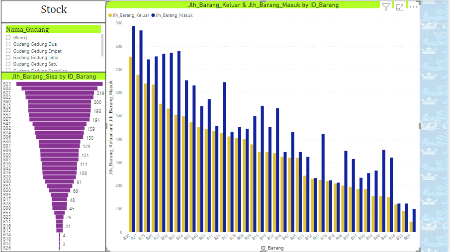
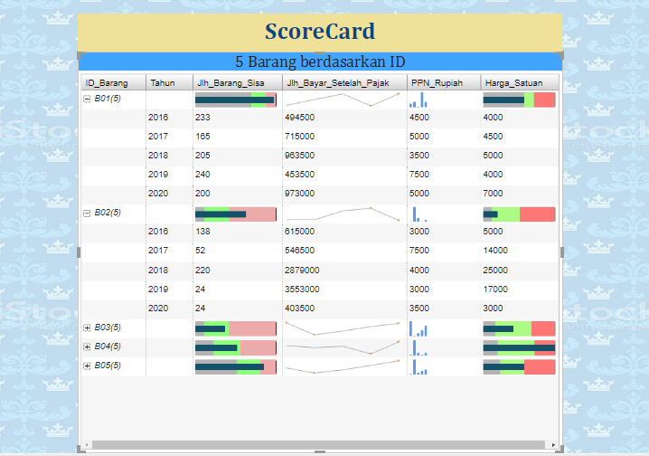

DWBI 2020
perancangan Data Mart pada Koperasi XYZ
Metode yang digunakan dalam melaksanakan pengerjaan proyek ini meliputi analisis, perancangan,
dilanjutkan
dengan pembuatan dashboard dan scorecard, pengujian ETL proses pada dimension dan fact juga
dilakukan evaluasi kembali.
Perancangan data mart proyek ini menggunakan penerapan skema bintang, termasuk rancangan
arsitekturnya.
Skema bintang adalah suatu desain database yang paling sering digunakan untuk
merealisasikan sebuah data mart, memiliki struktur sederhana dengan tabel-tabel yang
relatif
dan penggabungan yang telah diketahui.
Pada perancangan datawarehouse pada Koperasi XYZ, untuk mengolah
data dan memvisualisasikan data tersebut kami visualisasikan dengan
dashboard yang kami buat dengan bantuan tool Power BI
Dashboard ini mewakilkan data penjualan dan pembelian Koperasi XYZ pada bulan Agustus
dimana jika kita mengklik ataupun memilih filtering by Bulan yang terletak di kiri atas
dashboard yang sudah kita buat
Dashboard ini mewakilkan data penjualan dan pembelian Koperasi XYZ untuk kategori barang "Alat
tulis"
dimana jika kita mengklik ataupun memilih filtering by kategori barang yang terletak di kiri
atas
dashboard yang sudah kita buat

Dashboard ini mewakilkan data ketersediaan barang/stock pada Koperasi XYZ dimana pada dashboard
menampilkan lokasi dimana barang disimpan (gudang) serta jumlah sisa dan jumlah barang yang
sudah masuk
maupun jumlah barang yang keluar pada tiap gudang
Dashboard ini mewakilkan data ketersediaan barang/stock pada Koperasi XYZ dimana pada dashboard
menampilkan data barang/stock pada gudang 04, apabila kita memfilter data dengan memilih gudang
04
pada sebelah kiri atas sehingga kita dapat tahu jumlah barang/stock sisa dan juga jumlah baramg
yang masuk
dan keluar pada gudang 04
Metode lain untuk mengukur kinerja datawarehouse kita dapat kita capai dengan balanced scorecard.
Manfaat sistem ini adalah mengukur kinerja penjualan, pembelian dan ketersediaan dari sisi
jumlah barang,
jumlah barang sisa, dan dapat kita lihat juga dari sisi harga barang itu sendiri dan PPN nya
dimana data ini
dapat kita jabarkan selama beberapa tahun terakhir,sehingga menghasilkan data yang laporan
dinamis

Scorecard ini mewakilkan laporan data dari top 5 Id Barang yang kami pilih dimana apabila kita
mengklik
ikon "+" maka akan disajikan data 5 tahun terakhir disertai grafik pencapaiannya
Scorecard ini mewakilkan laporan data dari top 5 Id Barang yang kami pilih dimana apabila kita
mengklik
ikon "+" maka akan disajikan data 5 tahun terakhir disertai grafik pencapaiannya